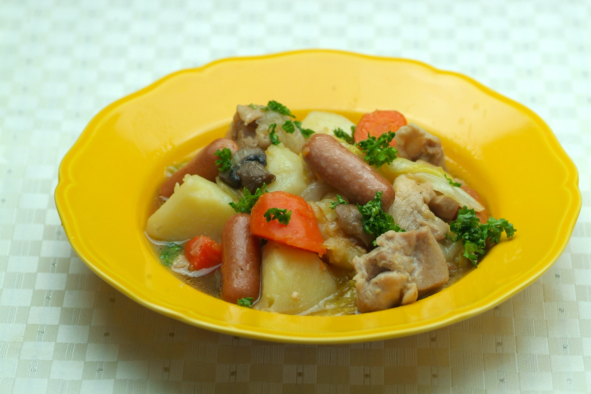

鶏肉とウインナーのフランス田舎風蒸し煮

材料（6人分）
- マジ旨ウインナー ... 8本
- 鶏肉(もも) ... 1枚
- じゃがいも ... 4個
- にんじん... 1本
- 玉ねぎ... 2個
- マッシュルーム ... 1パック
- キャベツ ... 1/4個
- にんにく ... １片
- ベイリーフ ... 1枚
- バター ... 大さじ3
- 塩こしょう ... 少々
作り方（調理時間:25分/目安）
- にんにくはスライスし、鶏肉、じゃがいも、にんじんはひと口大に切る。
- 玉ねぎはくし型切り、マッシュルームは薄切り、キャベツはざく切りにする。
- フライパンにバター(大さじ1)を溶かし、鶏肉を皮目から入れて焼き、両面に焼き目を入れて取り出す。
- バター(大さじ2)を足してにんにくと玉ねぎを炒め、透き通ってきたら残りの野菜を加えてふたをし、中火で蒸し煮にする。
- 野菜がしんなりしてきたら③をもどし、ウインナーとベイリーフを加えて、ふたをして弱火で蒸し煮にして、塩こしょうで味を調える。
提供
伊藤ハム米久ホールディングス（株）